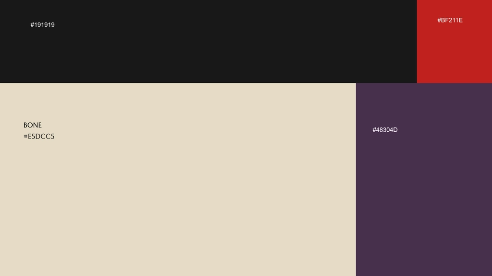
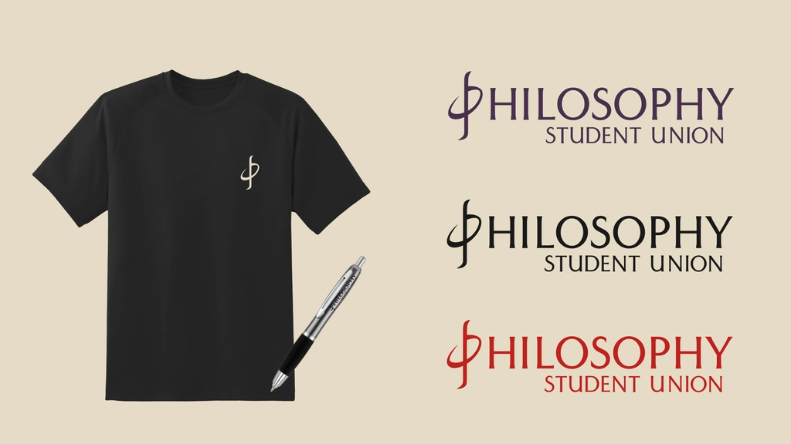
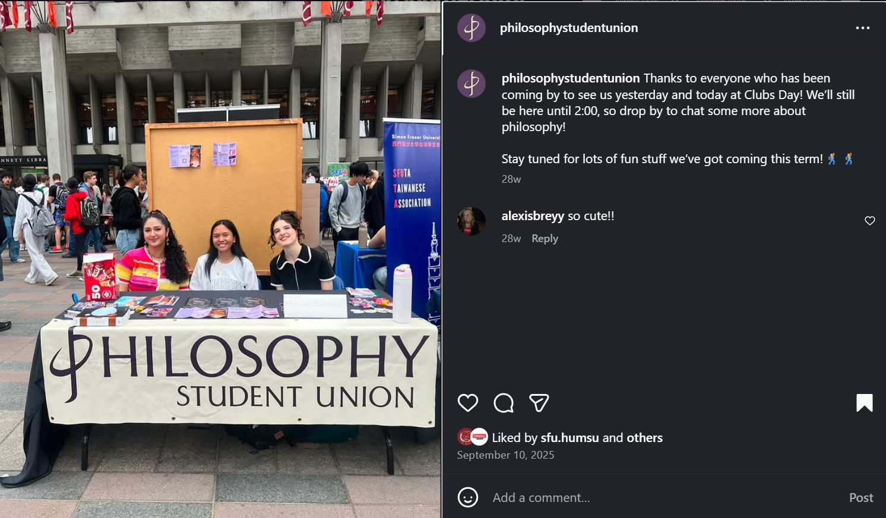

The Brief
The SFU Philosophy Student Union needed a visual identity that could represent the department across student events, social media, and merchandise — without feeling generic. Philosophy as a discipline has strong visual traditions (classical type, academic weight) but a student union also needs to feel approachable and current.
The challenge was threading that needle: something serious enough to represent the academic context, but designed for Instagram squares, event booths, and hoodies — not just letterheads.
The Logo System
The primary logo was designed to work across all formats — from small social media profile icons to large-format event banners. The system was built with three colourways from the start, ensuring consistency across different backgrounds and contexts without needing to redraw anything.
Primary logo and brand overview · © Angela Shen

Usage rules and clear space guidelines · © Angela Shen
Colour Variations
Three colour variants were created to cover the full range of use cases — light backgrounds, dark backgrounds, and neutral or printed contexts where full colour isn't viable.
Typography & Mark
The brand guide includes detailed explanations of the typeface choices and the logic behind each element of the mark — ensuring anyone using the identity in future can apply it consistently without needing to consult a designer.
Typeface rationale and hierarchy · © Angela Shen
Logo mark — construction and symbolism · © Angela Shen
Merchandise Applications
The identity was extended into merchandise mockups as part of the handoff — giving the union a ready-to-use set of applications for apparel, tote bags, and event swag without requiring additional design work.

Merchandise mockups included in the brand guide handoff · © Angela Shen
Still in Use — Proof of Adoption
The identity wasn't a one-time deliverable. The Philosophy Student Union continues to use the logo system across their active channels — Instagram posts, event booths, and promotional banners. The system has held up across contexts without needing modification, which was the original goal.
Instagram — logo in active use on the union's official account

Instagram grid — consistent application across posts

Event booth — logo applied to banner, in use at an SFU student union event · © Angela Shen
Outcome
The identity has been adopted across all the union's public-facing touchpoints — social media, event banners, and merchandise — without modification. A brand system works when the people using it don't need to call the designer. This one hasn't needed a call.